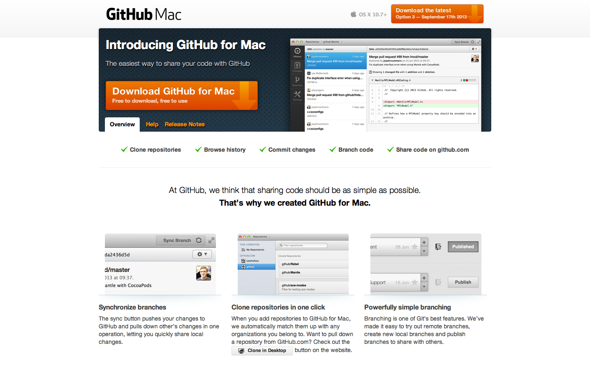
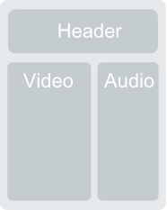

Web-basierte Anwendungen 1
Medienformate
7. November 2013
Studiengang Medieninformatik an der Fachhochschule Köln
Campus Gummersbach
Aysenur Cavusoglu
Kai Dippel
Christian Grevenstein
Gliederung
- Medienformate Allgemein
- Bilder
- Formate
- Einbettung
- Musik
- Formate
- Einbettung
- Videos
- Allgemeines
- Einbettung
- SVG Grafiken
- Übungen
Medienformate
Bilder
Musik
Videos
Bilder
Formate:
- GIF
- JPG
- PNG
GIF
Graphics Interchange Format
| Vorteile | Nachteile |
|---|---|
| verlustfreie Kompression | nur 256 Farben |
| Transparenz und Animation möglich |
- Verwendung: Für alle Animationen für die Flash/HTML5 ungeeignet sind
JPG
Joint Photographic Experts Group
| Vorteile | Nachteile |
|---|---|
| 16,7 Mio Farben | Qualitätsverlust durch Kompression |
| Dateigröße gering | Transparenz und Animation nicht möglich |
- Verwendung: Nahezu alle Fotos im Internet, welche keine Transparenz oder absolut perfekte Qualität benötigen, sind JPEG Dateien
PNG
Portable Network Graphics
| Vorteile | Nachteile |
|---|---|
| Verlustfreie Kompression | keine Animation möglich |
| Transparenz möglich | große Dateien |
| 16,7 Mio Farben | |
| Effektivere Kompression als GIF |
- Verwendung: Für Icons und Grafiken oder auch Fotos mit transparenten Bereichen
Kompatiblität
- Alle wichtigen Browser unterstützen alle wichtigen Bildformate
Implementierung lokaler Bilder
<p><img src="test.png" alt="test"></p>

alt-Tag soll das Bild beschreiben, falls es nicht dargestellt werden kann
Implementierung externer Quellen
<p><img src="http://www.medieninformatik.fh-koeln.de/website/bachelor/general/startseite_72/de/images/aktion_72_74_startseite_index_5_2.jpg" alt="test"></p>

Musik
Verlustfreie Audioformate:
- WAV
Verlustbehaftete Audioformate:
- Ogg Vorbis
- mp3
WAV
Waveform Audio File Format
| Vorteile | Nachteile |
|---|---|
| Beste Klangqualität | Verschwendung von Speicherplatz für Frequenzen die für das menschliche Gehör nicht wahrnehmbar sind |
| Ohne Codecs lesbar | große Datenmengen |
- Verwendung: WAVs sollten nur sparsam eingesetzt werden, wenn es nötig ist. Besteht die Möglichkeit, auf MP3 oder OGG auszuweichen, sollte diese unbedingt genutzt werden.
Ogg Vorbis
| Vorteile | Nachteile |
|---|---|
| sehr gute Software-Unterstützung | höherer Energieverbrauch als MP3 bei Hardware-Playern |
| nicht patentiert, Hersteller zahlen keine Lizenzgebühren | wenig Weiterentwicklung von offizieller Seite, dafür von Drittentwicklern |
- Verwendung: Das Format ist streaming- und mehrkanalfähig, daher z.B. Internetradio
mp3
MPEG Audio Layer III
| Vorteile | Nachteile |
|---|---|
| Gute Komprimierung verkleinert die abgespielten Stücke merklich ohne merkliche Qualitätseinbußen | Zu stark komprimierte MP3 klingen blechern |
| Instrumentierung unbeschränkt | Herstellung eigener Musikstücke ist komplizierter |
| Klang ist unabhängig vom Rechner |
- Verwendung: MP3 ist ein beliebtes proprietäres Format zur sinnvollen Kompression von Audiodaten.
Kompatiblität
| Format | Browser |
|---|---|
| Firefox | ogg, wav |
| Opera | ogg, wav |
| Internet Explorer | mp3 |
| Chrome | ogg, wav, mp3 |
| Safari | wav, mp3 |
Implementierung lokaler Musik
<audio controls autoplay>
<source src="beispieltrack.ogg" type="audio/ogg">
<source src="beispieltrack.mp3" type="audio/mp3">
</audio>
Einbettung externer Quellen
<audio controls autoplay>
<source src="www.beispielmusik.de/test.ogg" type="audio/ogg">
</audio>
Videos
Allgemein
| Jedes Video muss für das Abspielen im Internet vorbereitet werden |
|---|
| Parameter: |
|
| Vorab: |
| Kein bestes Videoformat --> Anpassung an Browser und Internetverbindung |
Speicherformat
| Videos bestehen aus Video-Track, Audio Track und evtl Meta-Daten wie dem Titel verpackt in einem Container |
| Container: |
|---|
|
Codecs
|
|
| Codecs: | Container: |
|---|---|
|
|
Auflösung und Bitrate
| Auflösung |
|---|
|
| Bitrate |
|
Mobile Verbindungen
| Verbindungstyp (Praxis) | Bitrate |
|---|---|
|
|
|
|
|
|
|
|
|
|
|
|
Browserunterstützung
Desktop-Browser
| Internet Explorer | Firefox | Chrome | Safari | Opera | |
| mp4 | |||||
| WebM | |||||
| OGV |
Mobile-Browser
| Internet Explorer | Firefox | Chrome | Safari | |
| mp4 | ||||
| WebM | ||||
| OGV |
Fazit
Desktop
|
Mobil
|
Um wirklich allen Besuchern die Videos anbieten zu können muss man mehrere Formate benutzen.
Warum wird Flash abeglöst?
Nachteile Flash
- hohe Prozessorlast, hoher Akkuverbrauch
- Browser-Plug-In erforderlich
- Sicherheitslücken durch Plugin
- Suchmaschinenunfreundlich
Vorteile HTML5-Video-Tag
- direkte Einbettung in HTML
- kein Browser-Plug-In erforderlich
- Suchmaschinenfreundlich über Metadaten
Video in HTML-Seite einbetten
HTML5-Video-Tag
<video src="videos/movie.mp4" type="video/mp4" width="538" height="330" controls>
Video in HTML-Seite einbetten
HTML5-Video-Tag
Fallback
Um allen Benutzern das Video anbieten zu können werden mehrere Formate benutzt:
<video controls width="400" height="240">
<source src="movie.mp4" type="video/mp4" />
<source src="movie.webm" type="video/webm" />
<img src="movie.jpg" alt"Videostandbild" />
<p>Ihr Browser unterstützt kein HTML5-Video</p>
</video>
Attribute des Video-Tags
|
|
Video von externen Quellen einbetten
Beispiel Youtube-Video
<iframe class="youtube-player" type="text/html" width="640" height="385" src="http://www.youtube.com/embed/4KeUaWF3jHQ" frameborder="0" allowfullscreen>
</iframe>
SVG
Scalable Vector Graphics
Übungen
Hier geht es zu den Übungen.